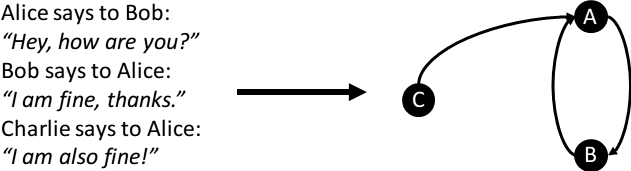

After having discussed how Enterprise Social Networks constitute for Social Capital in theory, my goal is to analyse Enterprise Social Network data and measure Social Capital for particular networks. Desired findings of such an analysis are how Social Capital impacts the individuals, groups and organisations within the network (Wasserman et al., 1994).
The research of Social Network Analysis is emergent interdisciplinary field (Stieglitz et al., 2014). In early research manual, qualitative studies with questionnaires (Hacker et al., 2016) were conducted. Manual collection of Social Network data is time-consuming and costly (Fischbach et al., 2008). In the last five years, with the adoption of Enterprise Social Network platforms, their large amount of data can be leveraged for analysis.
Stieglitz et al. (2014) developed a Social Network Analytics framework, which provides an overview of research domains, approaches and methods in social networks. It distinguishes three main analysis methods: (1) text mining, (2) Social Network Analysis and (3) trend analysis. My focus is (2) Social Network Analysis which I outline in the following.
Social Capital is intangible (Riemer et al., 2015) and cannot be quantified or measured directly (Adler et al., 2002). Therefore Social Network Analysis operationalises the network as a social network graph that can be measured. Statements about Social Capital are inferred from the social structures in the graph such as a user's position or relationships. When interpreting the measures, it should be noted that datasets are biased towards origin and context. Thus the context of the data must be considered to derive meaningful conclusions (Stieglitz et al., 2014).
The Social Network Analytics approach models relationships between persons, organisations and groups based on a graph theoretic model (Scott et al., 2012). It considers knowledge embedded in organisational structure (Brown et al., 2001) with a focus on relationships (Hansen et al., 1999). Linkages between employees and their social interactions are the subject of analysis (Allen et al., 2007). Therefore it is well suited to operationalise Social Capital. Typical graph metrics and approaches can be used for the analysis. Essential approaches and benefits are discussed in this section. The collected metrics are applied to Enterprise Social Networks and my dataset in section metric repository.
Graph theory is the mathematical study of nodes and edges, whereas edges connect the nodes. The edges can be directed or undirected i.e. having a direction. They can also have weight, describing the strength of the edge. Many algorithms and mathematical models exist to describe graphs and calculate their attributes, some of them can be useful for Social Network Analysis.
To model the Enterprise Social Network as a social network graph, the actors are represented by graph nodes and social relationships are represented by directed edges (Newman et al., 2010). This is illustrated in Figure 1. Since actors can be individuals, groups or organisations, a node can represent either of them (Scott et al., 2012). An edge can have different meanings: while it represents a social relationship, the type of the relationships is undetermined. For example, it can represent a post, a like or any kind of interaction (Newman et al., 2010) which is possible in the social network. The intensity or strength of the relationship is described by the edge weight (Scott et al., 2012)

In Figure 1 Alice and Bob are modeled as the nodes A and B. They exchange two messages with each other, that are modeled as edges between the two nodes. Charlie is the node C and sends Alice a message. Since Alice does not respond, there is only one directed edge from Charlie to Alice, but no edge back.
When modeling a network as a graph, Wasserman et al. (1994) describe a social network as "a finite set or sets of actors and the relations defined on them". Key concept according to Wasserman et al. (1994) is the focus on social relationships and their inherent value. They (p. 4) note the following four principles: (1) actors and actions are interdependent; (2) relationalships between actors are of value by "transporting" resources e.g. information; (3) network structure can support or constrain individual actions; (4) network models conceptualise social structure.
Social Network Analysis has practical relevance as it helps decision-making with human resource and knowledge management (Stieglitz et al., 2014). It can be used to detect influential (according to Social Capital theory) members in an Enterpise Social Network (Cross et al., 2002). Based on the graph metrics, high performing users and groups can be identified. Social Network Analysis can detect how information is diffused through the network and how the information flow is shaped by the network (Scott et al., 2012). I want to use it to find out where new ideas and information are exposed in groups and which groups are high-performing.
After the social network graph is constructed, graph theoretic metrics can be applied. They are distinguished into two categories: (1) egocentric measures and (2) global measures.
(1) Ego-centric measures are based on a focal individual i.e. center of analysis puts the indvidual in the center of the network. It is concerned with the neighborhood of the individual. This means they are calculated from all direct and indirect relationships and neighors this individual has. A direct relationship means the indivdual is connected personally to the other end, whereas an indirect relationship describes a situation where you know someone who knows the other. Such indirect relationships can be of different lengths, meaning that they can be connected via a path of neighbours (c.f. Xing or LinkedIn social network).
(2) Global measures are concerned with the properties of the network as a whole. The measures are calculated from the set of all the actors and relationships in the network. They are not simple aggregates but structural features of the network. An example measure is how densely connected the network is as a whole i.e. referring to Social Capital's cohesion.
For my Metric Repository in chapter \ref{metric-repository} there is one major difference to the notion of ego-centric measures and global measures: I define the two categories based on whether the interpretation is concerned with a focal individual or a global network, whereas the literature classifies the two categories based on whether the calculation is local or global. I changed this, because in this case it is easier to understand and compare the metrics' interpretations. So it is straight-forward for readers of this thesis to understand the results.
It should be noted that a minimum of activity and group size is required for an analysis, otherwise false results occur (Riemer et al., 2015). To identify key employees, it is mandatory that the employees actively use the Enterprise Social Network (Behrendt et al., 2014). The interpretation of the metrics' values varies on the context and size of the social network and its underlying data.